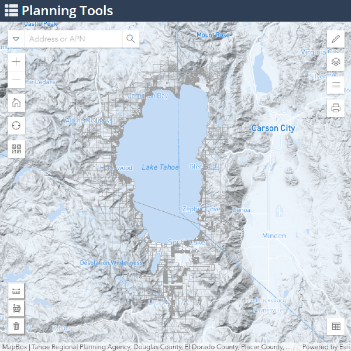
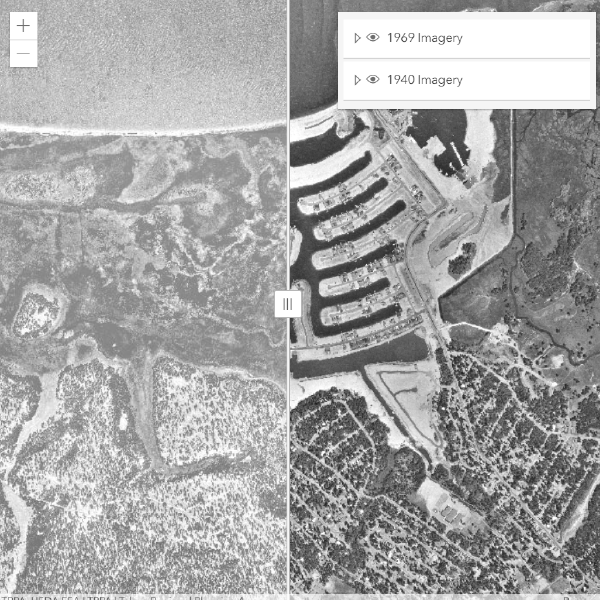
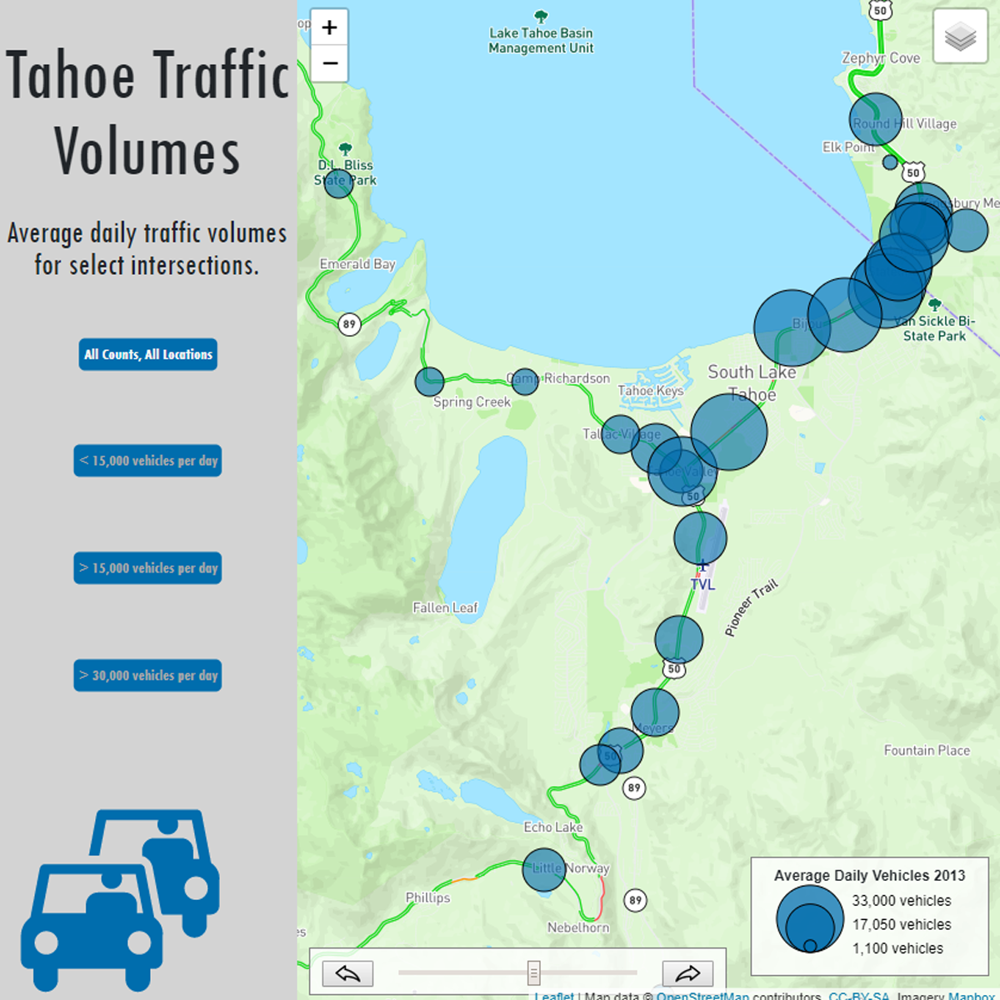
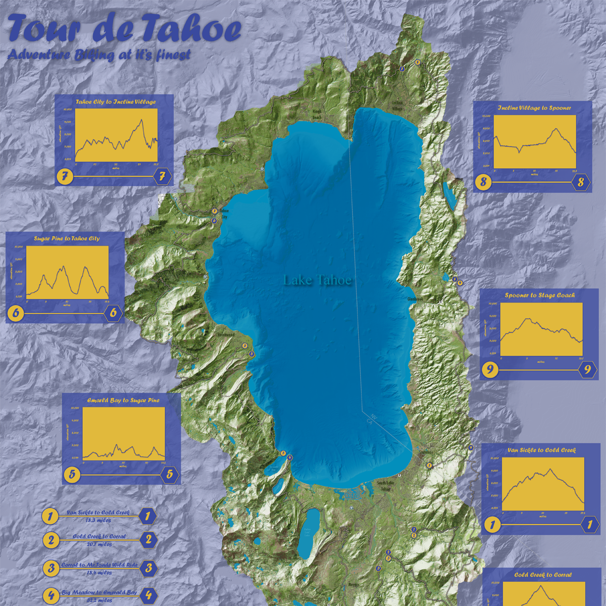
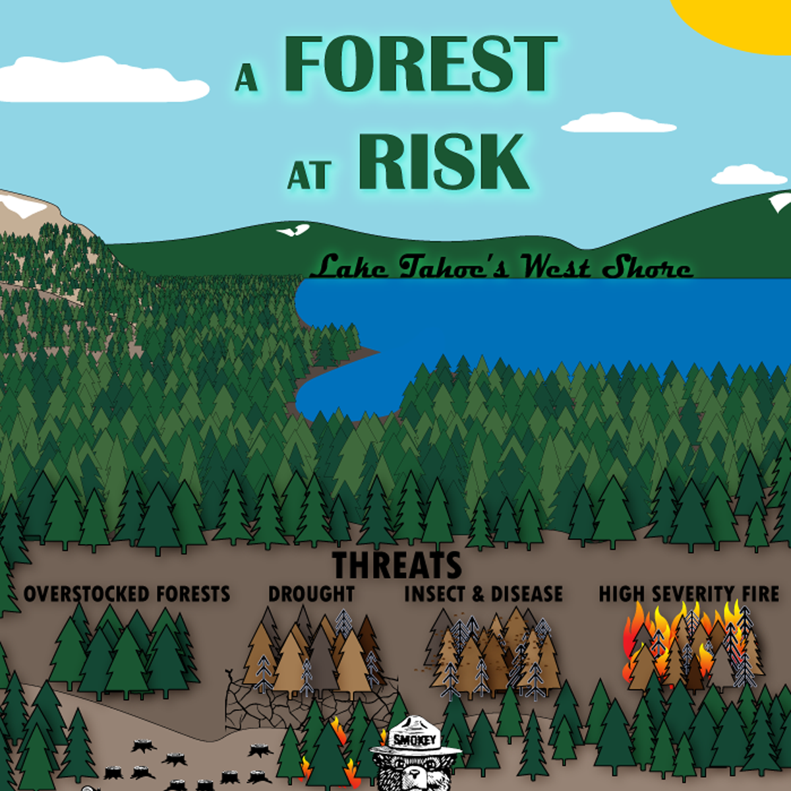

Web maps, dashboards, and cartographic products — from enterprise GIS at TRPA to custom map design at Blue Basin.

A suite of web maps, dashboards, and infographics supporting environmental planning in the Tahoe basin.

Interactive web map comparing current and historic aerial imagery of Lake Tahoe with a swipe interface.

Web mapping application visualizing historical traffic count data at stations around Lake Tahoe.

Terrain relief map of the Lake Tahoe basin designed as a mountain bike race course reference map.

Narrative infographic documenting forest conditions and the ecological story of Tahoe's west shore.
33 indicators across 4 goals — air quality, lake health, forest resilience, built systems. Embeddable chart pages feeding a CMS-driven platform used by agency staff and the public.
A monitoring framework tracking forest condition indicators against science-based thresholds for the Tahoe basin — supporting TRPA's adaptive management of fire risk, tree mortality, and ecosystem resilience.